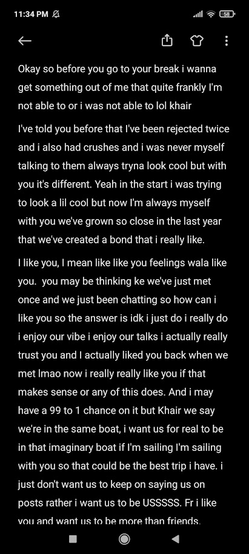

Farrah Gill is the reason i found the love of my life and i will always thank her i mean my first love i found in competition in which i didn't even knew i was going lolll. I saw you at the very start and i couldn't take my eyes of you but you were roaming idhar udhar and i lost you xD After that the end moment came i saw you on the top floor and i was literally just like i want to talk to her i want to talk to her but couldn't. Fate was kind that day, i finally interacted with you when you wrote Covfefe and i corrected you and you laughed and i fell in love with you smileeee that day. To this day that smile is my everything and it's the cutest and the most beautiful smile in the world. Then as you know we connected and then fell apart but Caies connected us again in 2020.
We both got admission in Bahria just different branches, and we both shared this moment together, our classes started we got busy but stayed connected. And i couldn't hold it but i couldn't propose because i had never been IN LOVE with someone so i took my time and when i realize okay yeh tou jarahee, I proposed you What ever is written here, i don't feel this anymore because i feel alot different and more than this, like nah i fucking love you, I owe you so much so so much you have no noo idea yarr. Our first date we saw a movie and at the end of that day held hands for the first time and gave a side hug. I can never forget that, because that was the first time i touched you and it felt sukoon yk ahh goosebumpss, then yk our first kiss our first makeout our first Car Crashhhh....Damnn xDD I proposed you ...
Well this year we got closer on an intimate level, those snaps started you saw me i you, we used to take long rides together and just enjoy ourselves and we got attached in an emotional,personal,intimate level. You also had dengue which scared me shitlessly. This year we had many dates and had moments which are engraved in our minds ykwim. And this year we started to think alright this is it. Alizah got to know about me too and tbh since that day she became my choti behn too and she helped me alot since then and yk i don't have alot of supporters and she's really only one supporting me and all throughout this im really thankful to her. That Qawaali day i cant ever forget that day how you looked, beautiful, how the ending went omgggg what a day it was yaar..
An up and down year tbh, we had some really beautiful moments like the makeouts and all spontaneous meetups, but also fights, we fought alot. I tried making up for a fuckup and we got caught by police twice in one day then another time one day xDDD We broke up lamba for the first time, we made up and ended the year with you in the beautiful black dress
The year started with your surgery, i know you think i didn't care and it's fair to think that, but i was worried i was thinking of you asking alizah sahi hai na wo bahir aagayie i couldn't come because your mother was their and yes Alizah said jaasaktay but ik it wasn't good of me i want to apologize alot but i don't know how i can
This year wasn't the way we planned but Mahnoor there are 3 more months left and all i want to do is end this year in a beautiful way istg just let me please just let me.